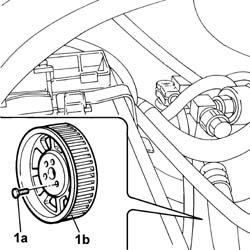

1032B62 A/C DUCT PULLEY - R R
- Path
- Procedures > 10 ENGINE UNIT > 1032 TIMING SYSTEM > 1032B BELT TIMING SYSTEM > 1032B62 A/C DUCT PULLEY - R R
- Kind
- repair procedure (removal / refitting; the operation number is the code)
- Applies to
- engines: 2.8 JTD 8V; all production periods
- Interactive page
- https://sloeber94.github.io/elrnDB-fDct/en/#/244000704
Applies to: all engines; all production periods
 Removing
Removing
 Refitting
Refitting- Disconnect the negative battery terminal.
Op. 7055B54 UNDER-ENGINE GUARD - R R
See in Op. 1008B10
See in Op. 1032D12
See in Op. 1032B14
1. Undo the fixing bolts (1a) and remove the driven pulley (1b).

Applies to: all engines; all production periods
Refitting
Removing- Place the pulley in position.
- Tighten the fixing bolts to torque.
 | Value - daNm | Fastening | Component | Ø |
|---|---|---|---|---|
. | 2,5 | Bolt | TIMING DUCT PULLEY | M8 |
See in Op. 1032B14
See in Op. 1032D12
See in Op. 1008B10